# source("src/config.R")
#load functions
source("src/functions/LIMMA/limma_functions.R")
# READ ANNOTATION
# sa <- fread('/s/project/mitoMultiOmics/multiOMICs_integration/raw_data/proteomics_annotation.tsv')
sa <- fread(snakemake@input$sample_annotation)
step 1 read and investigate data
step1.data <- fread(snakemake@input$raw_prot) %>% as.data.frame()
# step1.data <- fread('/s/project/mitoMultiOmics/multiOMICs_integration/raw_data/proteomics_not_normalized.tsv') %>% as.data.frame()
rownames(step1.data) <- step1.data$geneID
step1.data$geneID <- NULL
plots_normalization(step1.data, sa)
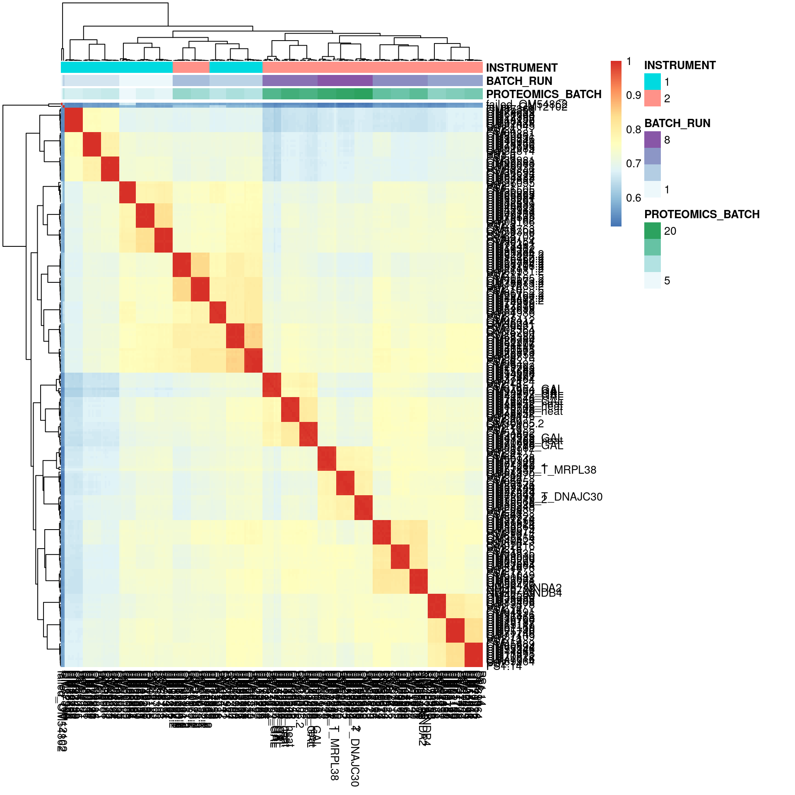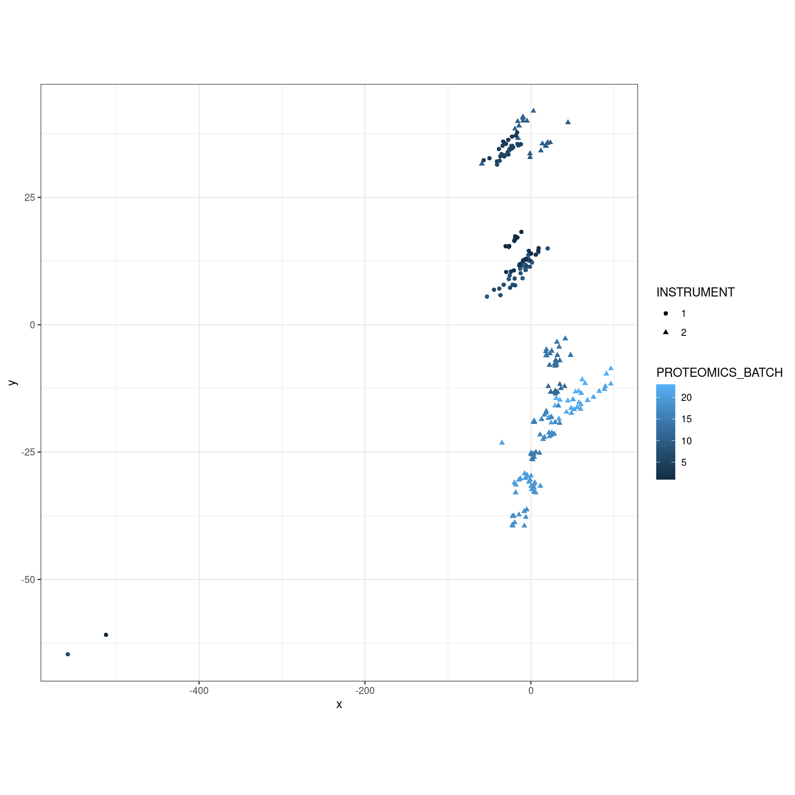
# barplots
dfx <- data.table( SAMPLE_ID = rownames(t(step1.data)) , SUM_INT = rowSums(t(step1.data)) )
dfx <- merge(sa[ ,.(SAMPLE_ID, PROTEOMICS_BATCH, BATCH_RUN, INSTRUMENT)], dfx, by = "SAMPLE_ID" )
dfx <- dfx[order(BATCH_RUN)]
ggplot(dfx, aes(SAMPLE_ID , SUM_INT))+
geom_col()+
theme_bw()+
theme(axis.text.x = element_text(angle = 45, hjust = 1),
axis.title.x = element_blank())+
facet_wrap(~PROTEOMICS_BATCH , scales = "free_x", nrow =2 )
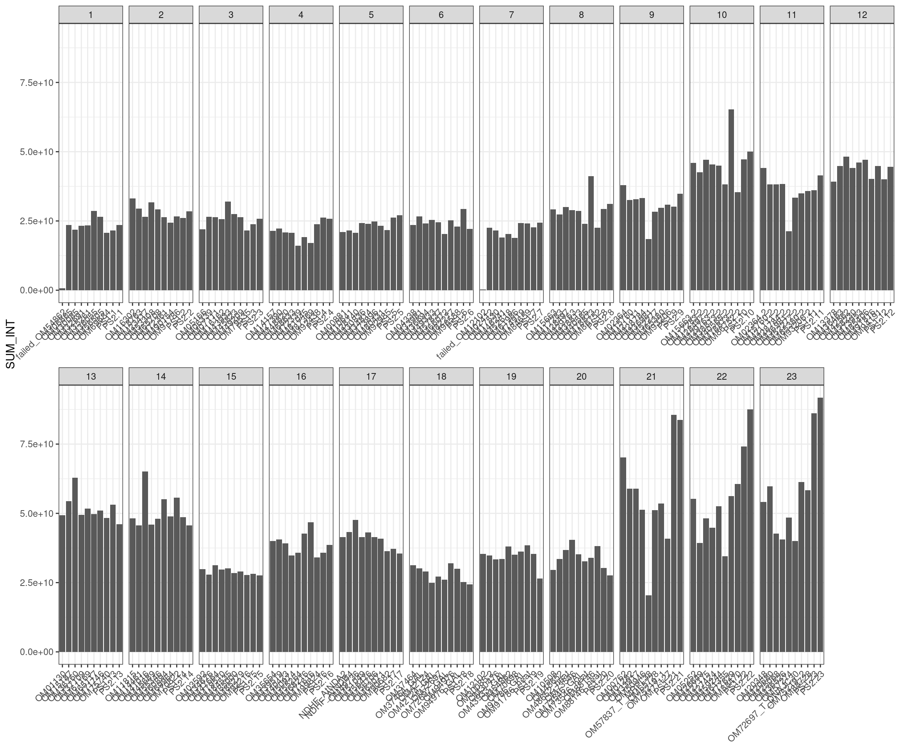
rm(dfx)
# Remove samples after inspection
rm.samples <- c("failed_OM54862", "failed_OM12102")
step 2 between run normalization
# step2.data <- rowwise_normalise(step1.data, quantil_cutoff = F, add.jitter = F, shift1 = FALSE)
step2.data <- rowshift(df = step1.data, batch = sa$PROTEOMICS_BATCH, ref = sa$NORMALIZATION_SAMPLE == T)
plots_normalization(step2.data, sa, rm.samples)
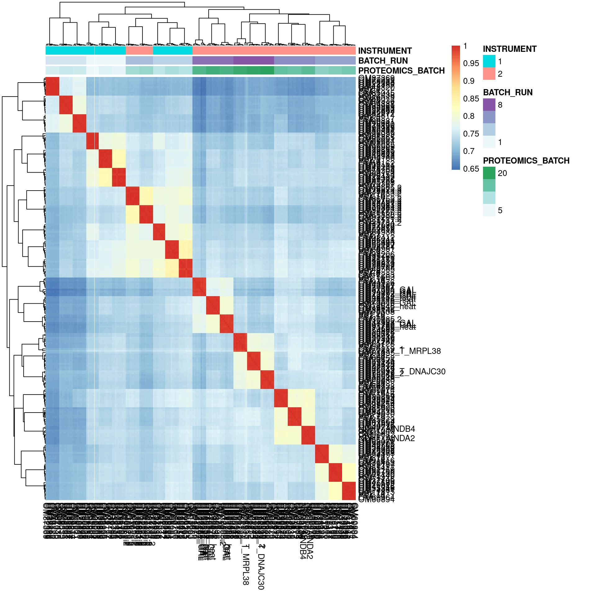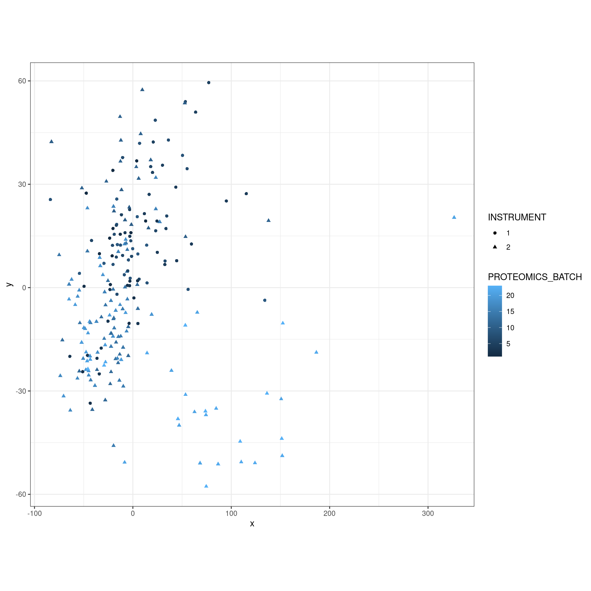
step 3 between sample normalisation
step3.data <- colwise_normalise(step2.data)
plots_normalization(step3.data, sa, rm.samples)
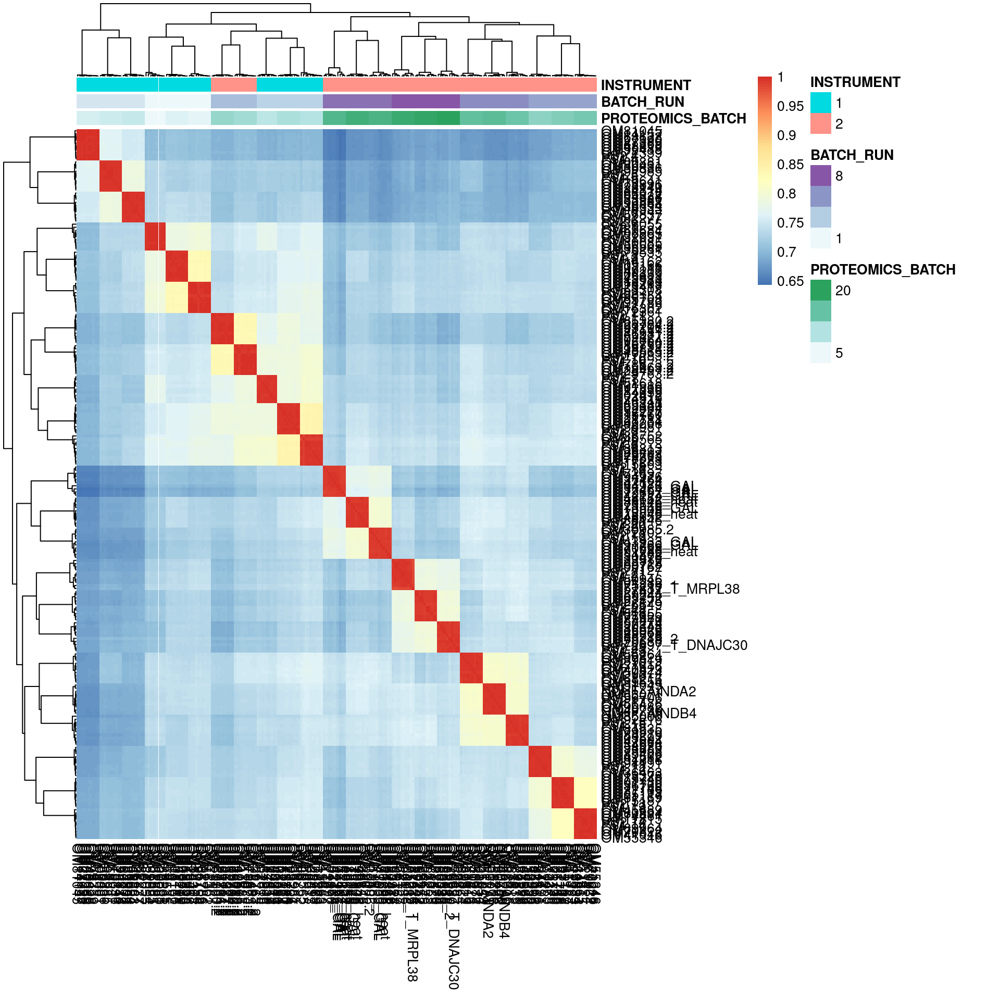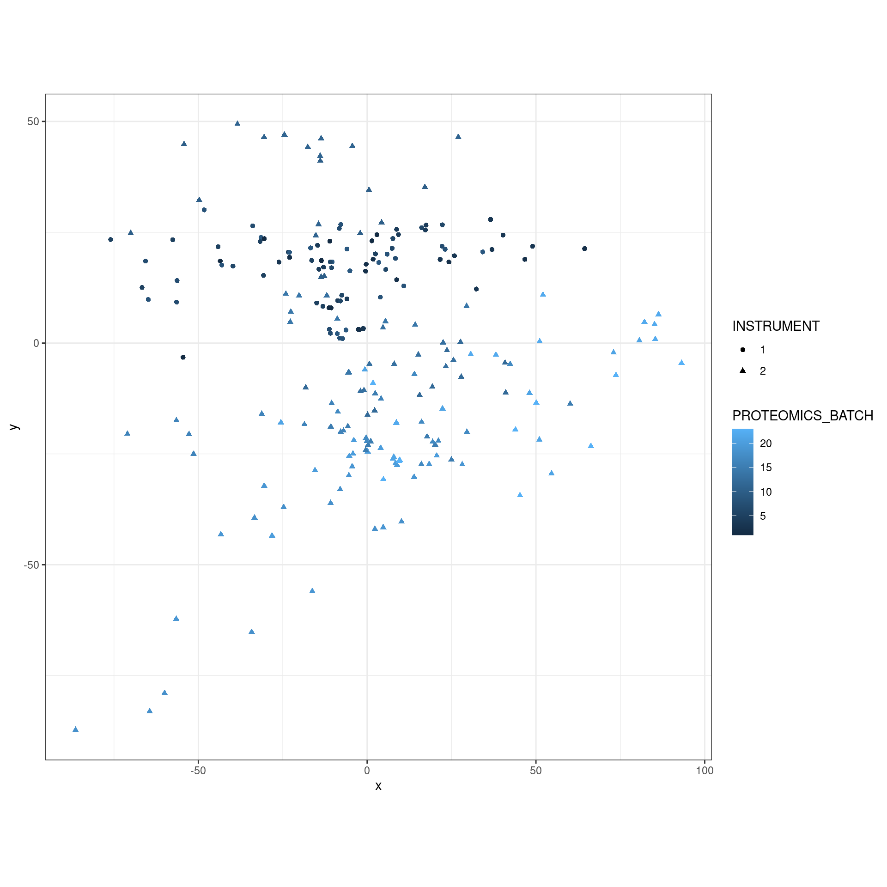
# Save normalized data
df <- cbind(rownames(step3.data), step3.data)
colnames(df)[1] <- "geneID"
# write_tsv(df, '/s/project/mitoMultiOmics/multiOMICs_integration/processed_data/limma/proteomics_normalized_not_imputed.tsv')
write_tsv(df, snakemake@output$norm_data)
step 4 Imputation
step4.data <- impute_min(step2.data, sa)
# Save imputed data
# write_tsv(step4.data, '/s/project/mitoMultiOmics/multiOMICs_integration/processed_data/limma/proteomics_normalized_imputed.tsv')
write_tsv(step4.data, snakemake@output$norm_imp_data)
genes <- step4.data$geneID
step4.data <- step4.data[ , -1]
rownames(step4.data) <- genes
plots_normalization(step4.data, sa, rm.samples)
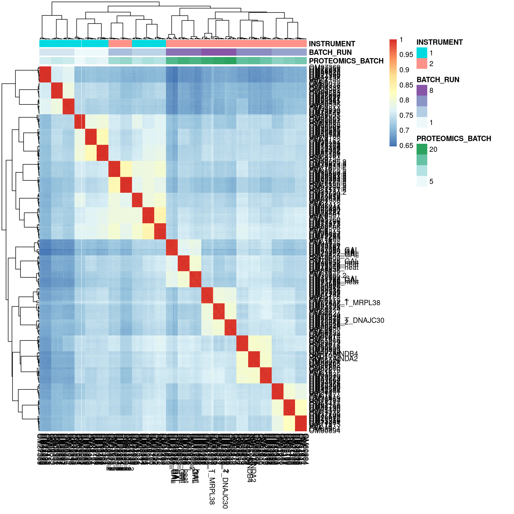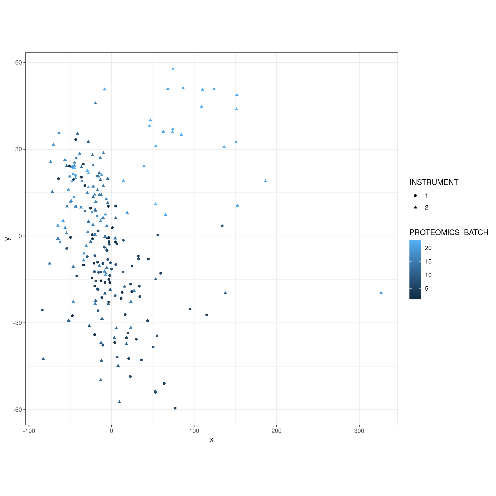
step 5 Prepare samples for LIMMA (paper cases)
step5.data <- step4.data
sa_paper <- sa[USE_FOR_PROTEOMICS_PAPER == T]
#Generate matrix, subset samples
mat_norm_prot_zero <- as.matrix(step5.data)
mat_norm_prot_zero <- mat_norm_prot_zero[,colnames(mat_norm_prot_zero) %in% sa_paper$SAMPLE_ID ]
dim(mat_norm_prot_zero)
## [1] 9270 147
#mat_norm_prot_zero[1:5, 1:5]
## Filter data - removes corrupted samples
# use only samples with less than 30% of NA or 0
sampleZeroFreq <- apply(mat_norm_prot_zero,2,function(x){ sum(x == 0)/length(x) })
#table(round(sampleZeroFreq, 3))
mat_norm_prot_zero <- mat_norm_prot_zero[, sampleZeroFreq < 0.3]
dim(mat_norm_prot_zero)
## [1] 9270 147
## Filter data - removes proteins with too many NAs
# use only genes expressed in 80% of samples
protZeroFreq <- apply(mat_norm_prot_zero,1,function(x){ sum(x == 0)/length(x) })
table(round(protZeroFreq, 3))
##
## 0 0.007 0.014 0.02 0.027 0.034 0.041 0.048 0.054 0.061 0.068 0.075 0.082 0.088 0.095 0.102 0.109 0.116 0.122 0.129
## 5339 2 1 5 55 69 12 64 363 6 1 11 47 61 23 49 161 14 6 13
## 0.136 0.143 0.15 0.156 0.163 0.17 0.177 0.184 0.19 0.197 0.204 0.211 0.218 0.224 0.231 0.238 0.245 0.252 0.259 0.265
## 45 44 24 38 86 21 9 13 42 60 23 43 35 12 8 20 31 40 22 28
## 0.272 0.279 0.286 0.293 0.299 0.306 0.313 0.32 0.327 0.333 0.34 0.347 0.354 0.361 0.367 0.374 0.381 0.388 0.395 0.401
## 35 18 13 32 35 37 11 24 29 14 11 35 30 26 19 26 19 18 20 30
## 0.408 0.415 0.422 0.429 0.435 0.442 0.449 0.456 0.463 0.469 0.476 0.483 0.49 0.497 0.503 0.51 0.517 0.524 0.531 0.537
## 25 19 27 16 19 18 19 26 19 21 21 11 22 16 28 16 18 20 25 15
## 0.544 0.551 0.558 0.565 0.571 0.578 0.585 0.592 0.599 0.605 0.612 0.619 0.626 0.633 0.639 0.646 0.653 0.66 0.667 0.673
## 18 29 20 15 16 18 17 21 13 21 19 29 21 22 29 12 21 16 20 16
## 0.68 0.687 0.694 0.701 0.707 0.714 0.721 0.728 0.735 0.741 0.748 0.755 0.762 0.769 0.776 0.782 0.789 0.796 0.803 0.81
## 21 28 30 19 22 18 16 18 22 21 34 10 19 14 15 23 28 36 46 17
## 0.816 0.823 0.83 0.837 0.844 0.85 0.857 0.864 0.871 0.878 0.884 0.891 0.898 0.905 0.912 0.918 0.925 0.932 0.939 0.946
## 19 16 10 35 12 37 25 30 12 10 15 64 29 20 24 38 11 7 15 59
## 0.952 0.959 0.966 0.973 0.986 1
## 14 18 21 27 4 19
mat_norm_prot_zero <- mat_norm_prot_zero[protZeroFreq < 0.86,]#
dim(mat_norm_prot_zero)
## [1] 8833 147
norm_prot_zero <- as.data.frame(mat_norm_prot_zero)
step5.data <- cbind(as.data.frame(rownames(norm_prot_zero)), norm_prot_zero)
setnames(step5.data, "rownames(norm_prot_zero)", "geneID")
# Write data
write_tsv(step5.data, snakemake@output$limma_data)
# write_tsv(step5.data, '/s/project/mitoMultiOmics/multiOMICs_integration/processed_data/limma/limma_data.tsv')
step5.data$geneID <- NULL
plots_normalization(step5.data, sa, rm.samples)
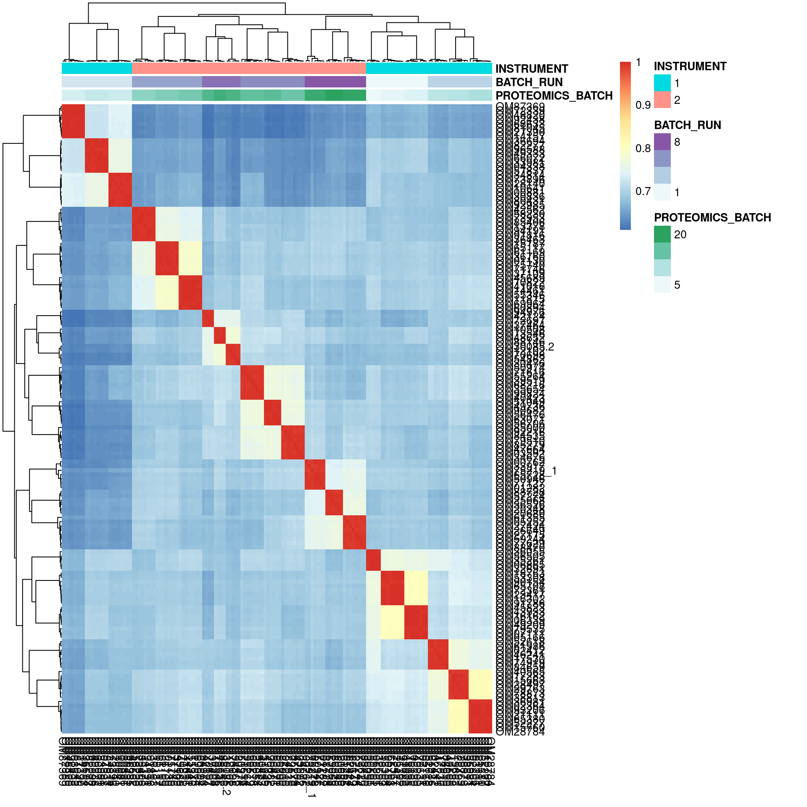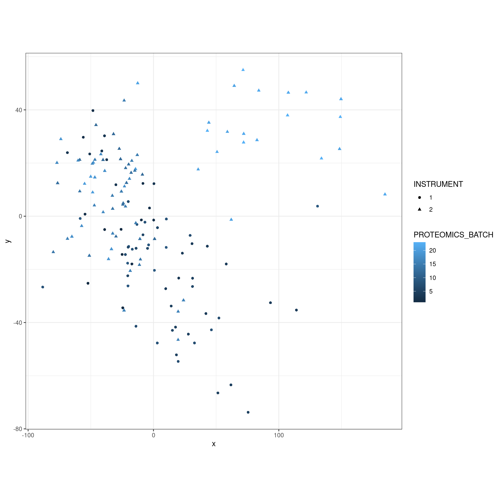
IyctLS0KIycgdGl0bGU6IFByb3Rlb21pY3MgZGF0YSBub3JtYWxpemF0aW9uIGFuZCBwcmVwYXJhdGlvbiBmb3IgbGltbWEgICAgICAgCiMnIGF1dGhvcjogc21pcm5vdmQsIENoZW4gTWVuZwojJyB3YjoKIycgIGlucHV0OgojJyAgLSBzYW1wbGVfYW5ub3RhdGlvbjogJ2BzbSBjb25maWdbIkFOTk9UQVRJT04iXWAnCiMnICAtIHJhd19wcm90OiAnYHNtIGNvbmZpZ1siUkFXX1Byb3RlaW4iXWAnCiMnICBvdXRwdXQ6CiMnICAtIG5vcm1fZGF0YTogJ2BzbSBjb25maWdbIlBST0NfREFUQSJdICsgIi9saW1tYS9wcm90ZW9taWNzX25vcm1hbGl6ZWRfbm90X2ltcHV0ZWQudHN2ImAnCiMnICAtIG5vcm1faW1wX2RhdGE6ICdgc20gY29uZmlnWyJQUk9DX0RBVEEiXSArICIvbGltbWEvcHJvdGVvbWljc19ub3JtYWxpemVkX2ltcHV0ZWQudHN2ImAnCiMnICAtIGxpbW1hX2RhdGE6ICdgc20gY29uZmlnWyJQUk9DX0RBVEEiXSArICIvbGltbWEvbGltbWFfZGF0YS50c3YiYCcKIycgb3V0cHV0OiAKIycgICBodG1sX2RvY3VtZW50OgojJyAgICBjb2RlX2ZvbGRpbmc6IGhpZGUKIycgICAgY29kZV9kb3dubG9hZDogVFJVRQojJy0tLQoKIyBzb3VyY2UoInNyYy9jb25maWcuUiIpCgojbG9hZCBmdW5jdGlvbnMKc291cmNlKCJzcmMvZnVuY3Rpb25zL0xJTU1BL2xpbW1hX2Z1bmN0aW9ucy5SIikKCgojIFJFQUQgQU5OT1RBVElPTgojIHNhIDwtIGZyZWFkKCcvcy9wcm9qZWN0L21pdG9NdWx0aU9taWNzL211bHRpT01JQ3NfaW50ZWdyYXRpb24vcmF3X2RhdGEvcHJvdGVvbWljc19hbm5vdGF0aW9uLnRzdicpCnNhIDwtIGZyZWFkKHNuYWtlbWFrZUBpbnB1dCRzYW1wbGVfYW5ub3RhdGlvbikKCgoKCiMnICMgc3RlcCAxIHJlYWQgYW5kIGludmVzdGlnYXRlIGRhdGEKc3RlcDEuZGF0YSA8LSBmcmVhZChzbmFrZW1ha2VAaW5wdXQkcmF3X3Byb3QpICU+JSBhcy5kYXRhLmZyYW1lKCkKIyBzdGVwMS5kYXRhIDwtIGZyZWFkKCcvcy9wcm9qZWN0L21pdG9NdWx0aU9taWNzL211bHRpT01JQ3NfaW50ZWdyYXRpb24vcmF3X2RhdGEvcHJvdGVvbWljc19ub3Rfbm9ybWFsaXplZC50c3YnKSAlPiUgYXMuZGF0YS5mcmFtZSgpCgpyb3duYW1lcyhzdGVwMS5kYXRhKSA8LSBzdGVwMS5kYXRhJGdlbmVJRApzdGVwMS5kYXRhJGdlbmVJRCA8LSBOVUxMCgojKyBmaWcud2lkdGg9MTAsIGZpZy5oZWlnaHQ9MTAKcGxvdHNfbm9ybWFsaXphdGlvbihzdGVwMS5kYXRhLCBzYSkKCgojIGJhcnBsb3RzCmRmeCA8LSBkYXRhLnRhYmxlKCBTQU1QTEVfSUQgPSByb3duYW1lcyh0KHN0ZXAxLmRhdGEpKSAsIFNVTV9JTlQgPSByb3dTdW1zKHQoc3RlcDEuZGF0YSkpICkKZGZ4IDwtIG1lcmdlKHNhWyAsLihTQU1QTEVfSUQsIFBST1RFT01JQ1NfQkFUQ0gsIEJBVENIX1JVTiwgSU5TVFJVTUVOVCldLCBkZngsIGJ5ID0gIlNBTVBMRV9JRCIgKQpkZnggPC0gZGZ4W29yZGVyKEJBVENIX1JVTildCgojKyBmaWcud2lkdGg9MTIsIGZpZy5oZWlnaHQ9MTAKZ2dwbG90KGRmeCwgYWVzKFNBTVBMRV9JRCAsIFNVTV9JTlQpKSsKICBnZW9tX2NvbCgpKyAKICB0aGVtZV9idygpKyAKICB0aGVtZShheGlzLnRleHQueCA9IGVsZW1lbnRfdGV4dChhbmdsZSA9IDQ1LCBoanVzdCA9IDEpLAogICAgICAgIGF4aXMudGl0bGUueCA9IGVsZW1lbnRfYmxhbmsoKSkrCiAgZmFjZXRfd3JhcCh+UFJPVEVPTUlDU19CQVRDSCAsIHNjYWxlcyA9ICJmcmVlX3giLCBucm93ID0yICkKCnJtKGRmeCkKCiMgUmVtb3ZlIHNhbXBsZXMgYWZ0ZXIgaW5zcGVjdGlvbgpybS5zYW1wbGVzIDwtIGMoImZhaWxlZF9PTTU0ODYyIiwgImZhaWxlZF9PTTEyMTAyIikgCgoKIycgIyBzdGVwIDIgYmV0d2VlbiBydW4gbm9ybWFsaXphdGlvbgojIHN0ZXAyLmRhdGEgPC0gcm93d2lzZV9ub3JtYWxpc2Uoc3RlcDEuZGF0YSwgcXVhbnRpbF9jdXRvZmYgPSBGLCBhZGQuaml0dGVyID0gRiwgc2hpZnQxID0gRkFMU0UpCnN0ZXAyLmRhdGEgPC0gcm93c2hpZnQoZGYgPSBzdGVwMS5kYXRhLCBiYXRjaCA9IHNhJFBST1RFT01JQ1NfQkFUQ0gsIHJlZiA9IHNhJE5PUk1BTElaQVRJT05fU0FNUExFID09IFQpCiMrIGZpZy53aWR0aD0xMCwgZmlnLmhlaWdodD0xMApwbG90c19ub3JtYWxpemF0aW9uKHN0ZXAyLmRhdGEsIHNhLCBybS5zYW1wbGVzKQoKCiMnICMgc3RlcCAzIGJldHdlZW4gc2FtcGxlIG5vcm1hbGlzYXRpb24Kc3RlcDMuZGF0YSA8LSBjb2x3aXNlX25vcm1hbGlzZShzdGVwMi5kYXRhKQojKyBmaWcud2lkdGg9MTAsIGZpZy5oZWlnaHQ9MTAKcGxvdHNfbm9ybWFsaXphdGlvbihzdGVwMy5kYXRhLCBzYSwgcm0uc2FtcGxlcykKCiMgU2F2ZSBub3JtYWxpemVkIGRhdGEKZGYgPC0gY2JpbmQocm93bmFtZXMoc3RlcDMuZGF0YSksIHN0ZXAzLmRhdGEpCmNvbG5hbWVzKGRmKVsxXSA8LSAiZ2VuZUlEIgojIHdyaXRlX3RzdihkZiwgJy9zL3Byb2plY3QvbWl0b011bHRpT21pY3MvbXVsdGlPTUlDc19pbnRlZ3JhdGlvbi9wcm9jZXNzZWRfZGF0YS9saW1tYS9wcm90ZW9taWNzX25vcm1hbGl6ZWRfbm90X2ltcHV0ZWQudHN2JykKd3JpdGVfdHN2KGRmLCAgc25ha2VtYWtlQG91dHB1dCRub3JtX2RhdGEpCgoKCgojJyAjIHN0ZXAgNCBJbXB1dGF0aW9uIApzdGVwNC5kYXRhIDwtIGltcHV0ZV9taW4oc3RlcDIuZGF0YSwgc2EpCgoKIyBTYXZlIGltcHV0ZWQgZGF0YQojIHdyaXRlX3RzdihzdGVwNC5kYXRhLCAnL3MvcHJvamVjdC9taXRvTXVsdGlPbWljcy9tdWx0aU9NSUNzX2ludGVncmF0aW9uL3Byb2Nlc3NlZF9kYXRhL2xpbW1hL3Byb3Rlb21pY3Nfbm9ybWFsaXplZF9pbXB1dGVkLnRzdicpCndyaXRlX3RzdihzdGVwNC5kYXRhLCAgc25ha2VtYWtlQG91dHB1dCRub3JtX2ltcF9kYXRhKQoKCmdlbmVzIDwtIHN0ZXA0LmRhdGEkZ2VuZUlECnN0ZXA0LmRhdGEgPC0gc3RlcDQuZGF0YVsgLCAtMV0Kcm93bmFtZXMoc3RlcDQuZGF0YSkgPC0gZ2VuZXMKIysgZmlnLndpZHRoPTEwLCBmaWcuaGVpZ2h0PTEwCnBsb3RzX25vcm1hbGl6YXRpb24oc3RlcDQuZGF0YSwgc2EsIHJtLnNhbXBsZXMpCgoKCgoKIycgIyBzdGVwIDUgUHJlcGFyZSBzYW1wbGVzIGZvciBMSU1NQSAocGFwZXIgY2FzZXMpCnN0ZXA1LmRhdGEgPC0gc3RlcDQuZGF0YQoKc2FfcGFwZXIgPC0gc2FbVVNFX0ZPUl9QUk9URU9NSUNTX1BBUEVSID09IFRdCgojR2VuZXJhdGUgbWF0cml4LCBzdWJzZXQgc2FtcGxlcwptYXRfbm9ybV9wcm90X3plcm8gPC0gYXMubWF0cml4KHN0ZXA1LmRhdGEpCm1hdF9ub3JtX3Byb3RfemVybyA8LSBtYXRfbm9ybV9wcm90X3plcm9bLGNvbG5hbWVzKG1hdF9ub3JtX3Byb3RfemVybykgJWluJSBzYV9wYXBlciRTQU1QTEVfSUQgXQpkaW0obWF0X25vcm1fcHJvdF96ZXJvKQojbWF0X25vcm1fcHJvdF96ZXJvWzE6NSwgMTo1XQoKCiMjIEZpbHRlciBkYXRhIC0gcmVtb3ZlcyBjb3JydXB0ZWQgc2FtcGxlcwojIHVzZSBvbmx5IHNhbXBsZXMgd2l0aCBsZXNzIHRoYW4gMzAlIG9mIE5BIG9yIDAgCnNhbXBsZVplcm9GcmVxIDwtIGFwcGx5KG1hdF9ub3JtX3Byb3RfemVybywyLGZ1bmN0aW9uKHgpeyBzdW0oeCA9PSAwKS9sZW5ndGgoeCkgfSkKI3RhYmxlKHJvdW5kKHNhbXBsZVplcm9GcmVxLCAzKSkKbWF0X25vcm1fcHJvdF96ZXJvIDwtIG1hdF9ub3JtX3Byb3RfemVyb1ssIHNhbXBsZVplcm9GcmVxIDwgMC4zXSAKZGltKG1hdF9ub3JtX3Byb3RfemVybykKCgojIyBGaWx0ZXIgZGF0YSAtIHJlbW92ZXMgcHJvdGVpbnMgd2l0aCB0b28gbWFueSBOQXMKIyB1c2Ugb25seSBnZW5lcyBleHByZXNzZWQgaW4gODAlIG9mIHNhbXBsZXMKcHJvdFplcm9GcmVxIDwtIGFwcGx5KG1hdF9ub3JtX3Byb3RfemVybywxLGZ1bmN0aW9uKHgpeyBzdW0oeCA9PSAwKS9sZW5ndGgoeCkgfSkKdGFibGUocm91bmQocHJvdFplcm9GcmVxLCAzKSkKbWF0X25vcm1fcHJvdF96ZXJvIDwtIG1hdF9ub3JtX3Byb3RfemVyb1twcm90WmVyb0ZyZXEgPCAwLjg2LF0jCmRpbShtYXRfbm9ybV9wcm90X3plcm8pCm5vcm1fcHJvdF96ZXJvIDwtIGFzLmRhdGEuZnJhbWUobWF0X25vcm1fcHJvdF96ZXJvKQoKCnN0ZXA1LmRhdGEgPC0gY2JpbmQoYXMuZGF0YS5mcmFtZShyb3duYW1lcyhub3JtX3Byb3RfemVybykpLCBub3JtX3Byb3RfemVybykKc2V0bmFtZXMoc3RlcDUuZGF0YSwgInJvd25hbWVzKG5vcm1fcHJvdF96ZXJvKSIsICJnZW5lSUQiKQoKCgojIFdyaXRlIGRhdGEKd3JpdGVfdHN2KHN0ZXA1LmRhdGEsICBzbmFrZW1ha2VAb3V0cHV0JGxpbW1hX2RhdGEpCiMgd3JpdGVfdHN2KHN0ZXA1LmRhdGEsICcvcy9wcm9qZWN0L21pdG9NdWx0aU9taWNzL211bHRpT01JQ3NfaW50ZWdyYXRpb24vcHJvY2Vzc2VkX2RhdGEvbGltbWEvbGltbWFfZGF0YS50c3YnKQoKc3RlcDUuZGF0YSRnZW5lSUQgPC0gTlVMTAojKyBmaWcud2lkdGg9MTAsIGZpZy5oZWlnaHQ9MTAKcGxvdHNfbm9ybWFsaXphdGlvbihzdGVwNS5kYXRhLCBzYSwgcm0uc2FtcGxlcykK